Y SINH
Một số ứng dụng của toán cao cấp trong lĩnh vực này:
- Tính lưu lượng máu
- Hiệu suất của tim
Một Số Ví Dụ
Lưu lượng máu
Quy luật của dòng chảy phân lớp:
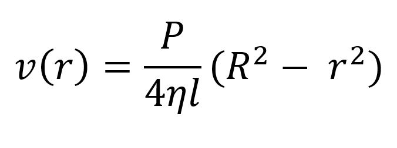Công thức này cho vận tốc v của dòng máu chảy theo mạch máu có bán kình là R và chiều dài l tại khoảng cách r từ mục trung tâm, trong đó P là chênh lệch áp suất giữa các đầu của mạch máu và η là độ nhớt của máu. Bây giờ, để tính tốc độ của dòng máu ( dung lượng trên đơn vị thời gian), ta xét các bán kính nhỏ hơn cách đều nhau r_1,r_2,... diện tích xấp xỉ của vành mạch máu có bán kính trong r_(i-1) và bán kính ngoài r_i là:
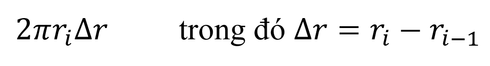 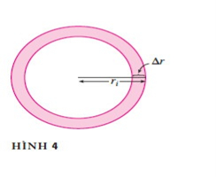Trong hình 4, nếu ∆r nhỏ thì vận tốc gần như không đổi khắp vành mạch và có thể được tính xấp xỉ v(r_i). Do đó dung lượng máu trên đơn vị thời gian chảy qua vành mạch xấp xỉ:
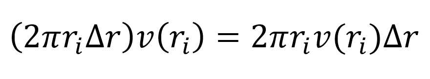Và tổng dung lượng máu chảy qua mặt cắt trên một đơn vị thời gian là khoảng:
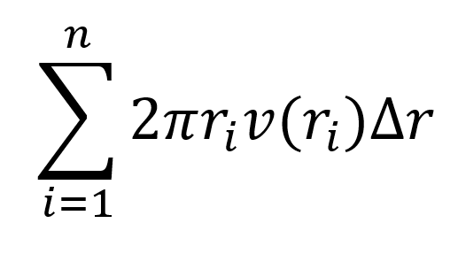 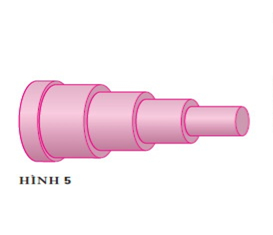Phép xấp xỉ được minh họa trong hình 5, cần lưu ý rằng vận tốc (dung lượng trên đơn vị thời gian) càng gần trung tâm mạch máu càng tăng. Giá trị xấp xỉ chính xác hơn khi η tăng. Khi ta lấy giới hạn , ta được giá trị chính xác của dòng máu (hoặc lưu lượng), dung lượng máu đi qua mặt cắt trên một đơn vị thời gian:
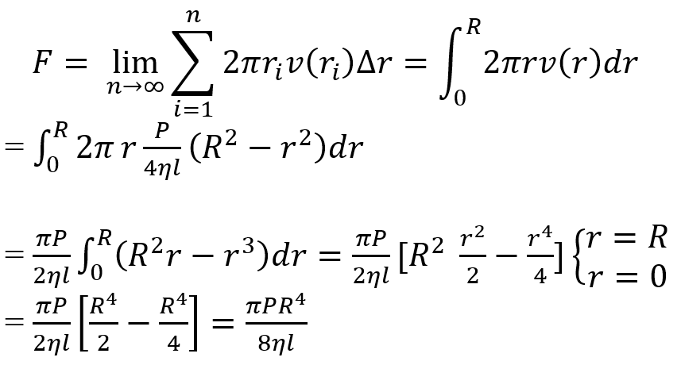Phương trình nhận được sẽ là:
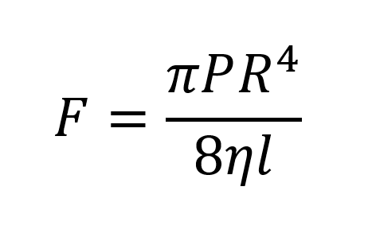Và phương trình này được gọi là Định Luật Poseuille, nó cho thấy rằng lưu lượng máu tỉ lệ với lũy thừa bậc 4 của bán kính của mạch máu.
Hiệu suất của tim
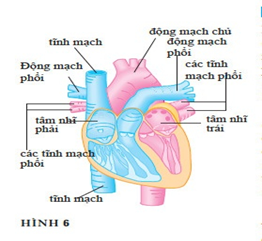Hình 6 cho ta thấy hệ tim mạch của còn người. Máu sẽ từ cơ thể quay trở lại thông qua tĩnh mạch, đi vào tâm nhĩ phải của tim và được bơi vào phổi thông qua thân động mạch phổi để bão hòa oxy, sau đó nó sẽ chảy trở lại vào tâm nhĩ trái thông qua các tĩnh mạch phổi và sau đó chảy ra ngoài đến phần còn lai của cơ thể thông qua động mạch chủ. Hiệu suất của tim là lưu lượng máu được bơm bởi tim trên một đơn vị thời gian. Nghĩa là, lưu lượng máu chảy vào động mạch chủ.
Phương pháp pha loãng chất chỉ thị màu được sử dụng để đo hiệu suất tim. Chất chỉ thị màu được bơm vào tâm nhĩ phải và chảy qua tim vào động mạch chủ. Một đầu dò được đưa vào động mạch chủ do nồng độ của chất chỉ thị màu còn lại ở tim tại các thời điểm cách đều nhau trong một khoảng thời gian [0,T] cho đến khi chất chỉ thị màu tan sạch. Cho c(t) là nồng độ của chất chỉ thị màu theo thời gian t. Nếu chúng ta chia [0,T] thành các khoảng con có độ dài bằng nhau ∆t, thì lượng chất chỉ thị màu chảy qua điểm đo suốt khoảng con từ t=t_(i-1) đến t=t_i xấp xỉ :
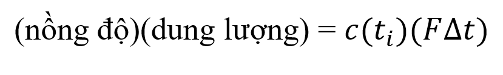Trong đó: F là tốc độ của dòng máu mà chúng ta đang cố gắng xác định. Do đó tổng lượng chất chỉ thị màu xấp xỉ:
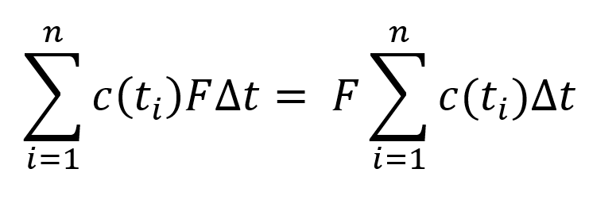Và cho n→ ∞, ta nhận thấy rằng năng lượng chất chỉ thị màu là:
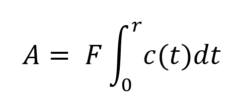Do đó hiệu suất tim được cho bởi công thức:
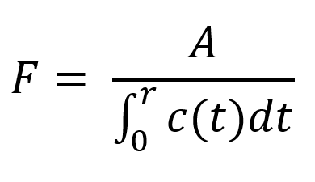Trong đó: đã biết lượng chất chỉ thị màu A và có thể tính xấp xỉ tích phân khi đọc số đo nồng độ.